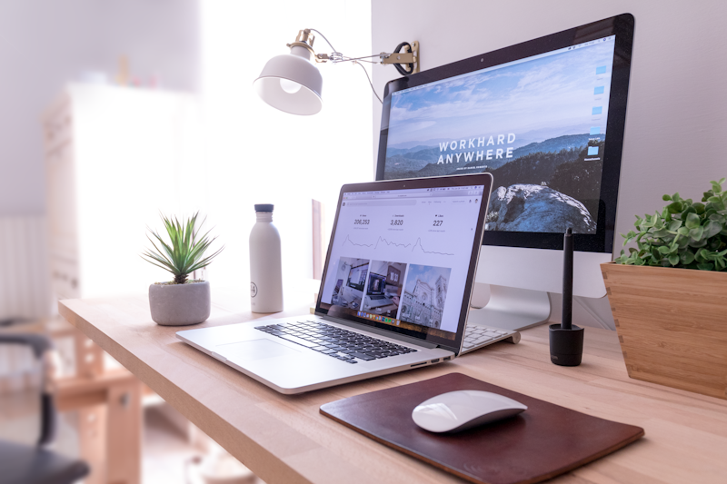

Overview
既存のコーポレートサイトはデザインが古く、スマートフォンにも最適化されていなかったため、ユーザーの離脱率が高いという課題がありました。本プロジェクトでは、ターゲット層の再定義から始め、モダンで信頼感のあるデザインへと一新しました。
Challenges & Solutions
複雑だったナビゲーション構造を見直し、ユーザーが求める情報に最短でアクセスできるよう、情報設計（IA）を大幅に改善しました。また、メインビジュアルにはマイクロインタラクションを取り入れ、印象に残るファーストビューを実現しています。

結果として、リニューアル後3ヶ月でサイトからの問い合わせ数が150%に増加し、直帰率も大幅に改善されました。